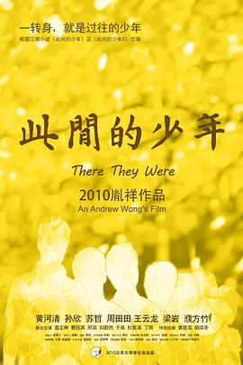

此间的少年
又名：There They Were
不懂
作品信息
| 导演 | 胤祥 |
| 编剧 | 胤祥 / 公子木 |
| 主演 | 黄河清 / 孙欣 / 苏哲 / 周田田 / 王云龙 / 梁岩 / 濮方竹 / 查正琳 / 曹冠英 / 邢滨 / 刘蔚然 / 于泉 / 杜若溪 / 丁雨 / 黄建滨 / 胡续冬 |
| 类型 | 剧情 / 喜剧 |
| 制片国家/地区 | 中国大陆 |
| 语言 | 汉语普通话 |
| 上映日期 | 2010-12-23(中国大陆) |
| 片长 | 168分钟(导演剪辑版) / 126分钟(正式版) |
最后一次看到是 2026-08-12T21:13:30+08:00 · 豆瓣原页